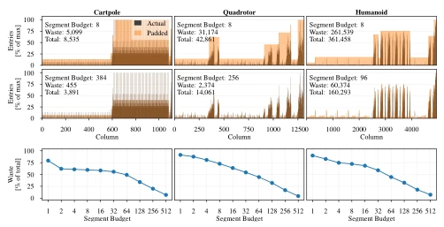
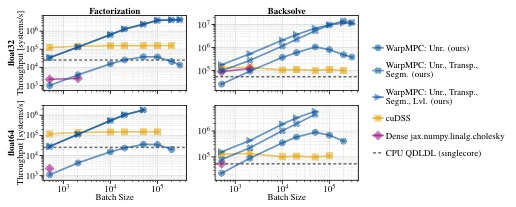
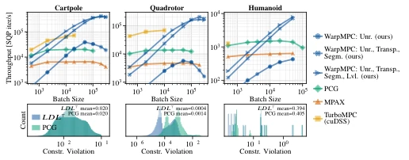
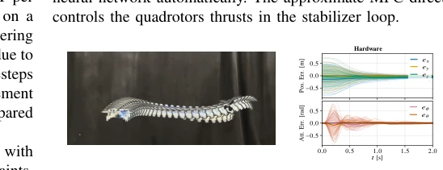

This paper essentially squeezes toothpaste out of an MPC solver on GPUs, but squeezes quite hard. WarpMPC achieves this by hardcoding sparse LDL decomposition into fixed patterns, forcing large concurrency on GPUs, indeed pulling SQP iteration speed to 250,000 per second. However, this approach is ineffective for single-sample solving; it requires stacking to 10000+ batch size to take off. For scenarios requiring real-time single-step control, this optimization is somewhat overkill. Moreover, it relies on CasADi to JAX conversion; although fast, flexibility may not be as good as native C++. Overall, it is a sharp tool when training MPC policies, but do not expect it to directly replace real-time controllers. Additionally, double-precision memory constraints are also a potential risk; large models may not run.
With the combination of MPC and deep learning (such as RL or imitation learning), there is a need to solve a large number of MPC problems in parallel [2], [3]. Existing tools mostly target single-sample CPU optimization [6], or cannot handle general constraints on GPUs [10], [13]-[16]. If using CPU serially, it takes several days [2], [17]; if using GPU clusters, costs are high [5], [18]. Especially in ADMM solvers, sparse linear solving is the bottleneck; GPU branch and memory access efficiency are low [22], [23]. Existing GPU libraries like cuDSS [22] are fast in small batch, but not as good as this paper's optimization in large batch. Existing GPU solvers like MPCGPU [10] use PCG; accuracy and constraint satisfaction are not as good as direct methods. TurboMPC [24] is fast but large batch easily causes VRAM overflow. Therefore, customized solvers targeting specific sparse patterns become necessary to balance generality and performance.
WarpMPC adopts a two-stage architecture of offline symbolic compilation + online numerical execution. First, convert CasADi models to JAX functions, precompute sparse patterns [26]. The core innovation lies in "unrolling" the $LDL^\top$ decomposition and back-substitution process in ADMM into fixed kernels, avoiding GPU branch overhead. Specific optimizations include: 1) Symbol-first memory layout, storing batch dimension contiguously, utilizing GPU vectorization; 2) Segmented fill scan, compiling columns by non-zero element count segments, reducing padding waste (Fig. 2); 3) Dependency level scheduling, grouping columns in back-substitution by dependency relations for parallel execution, reducing serial steps (Fig. 3). Additionally, supports sensitivity calculation, facilitating differentiable MPC training. Specifically, offline phase builds symbolic graph, calculates elimination order and dependency tree, generates fixed kernels. Online phase, data is laid out as (nnz, B), not (B, nnz), ensuring adjacent threads access contiguous memory. Segmented strategy divides columns into several intervals, each interval compiled independently, balancing compile time and runtime efficiency. Dependency scheduling parallelizes back-substitution steps by level, reducing GPU idle time. Sensitivity calculation reuses factorization, supports backpropagation. These optimizations collectively solve the memory wall problem of sparse matrix operations on GPUs.

Fig. 2. Visualization of optimal column segmentation for the cartpole, quadrotor, and humanoid MPC. The number of factor entries per column are plotted as a histogram over the column index for exemplary segment budgets of 8 (top) and empirically chosen segment budgets 384, 256, and 96 (center). Additionally, the percentage of wasted padding entries over segment budget are shown for a sweep over segment sizes (bottom). .

Fig. 5. Effect of optimizations for a single sparse factorization (left) and backsolve (right) on GPU. We evaluate the throughput over batch size for single (top) and double (bottom) floating point precision. We benchmark WarpMPC (●, ✖, ▶) against sparse cuDSS [22] (■), dense factorization (◆), and CPU factorization (- -), all of which we outperform for batch sizes over 2000. The dependency level scheduling backsolve (▶) improves throughput with underutilized GPU resources for small batches.
Tested on three nonlinear MPC benchmarks: Cartpole, Quadrotor, and Humanoid, comparing PCG [8], MPAX [32], TurboMPC [24]. Metric is SQP iteration throughput. Results show WarpMPC significantly leads when batch > 10000, Humanoid reaches 8000 SQP/s (Fig. 7). Compared to PCG, constraint violation rate is lower. Ablation experiments show segmentation and scheduling optimizations improve significantly under small batch, converge under large batch. Finally, validated on Crazyflie drone, synthesized 20 million data within 4 minutes to train NN controller and deploy (Fig. 10). Ablation experiments show segmented strategy reduced 80% of padding waste. In Humanoid task, TurboMPC cannot run large batch due to insufficient VRAM. WarpMPC's sensitivity calculation supports end-to-end training, which is difficult for PCG baseline to achieve.

Fig. 7. Overall throughput in SQP iterations per second over batch size for three nonlinear MPC examples: cartpole pendulum (left), quadrotor (center), and humanoid robot (right). We compare WarpMPC (●, ✖, ▶) with a sparsity exploiting PCG [8] (◆), MPAX [32] (▲) for QP solving, and TurboMPC [24] (■), which uses the cuDSS sparse linear solver. For batch sizes above 10 000, the optimized, unrolled LDL⊤factorization in WarpMPC consistently improves throughput compared to all baselines. The effectiveness of the solve level optimization (▶) diminishes for large batches. Due to the low tolerance, PCG shows higher mean constraint violations (bottom). For the humanoid, TurboMPC fails with out-of-memory errors above B = 512.

Fig. 10. Hardware experiments controlling a Crazyflie nano quadrotor with a neural network approximation of MPC (left: frames overlayed from experiment video, right: recorded state error evolution for tracking randomized setpoints). We synthesize the dataset in 2 min and train the policy in 1.7 min wallclock time with 11 min compilation overhead, which can be cached.